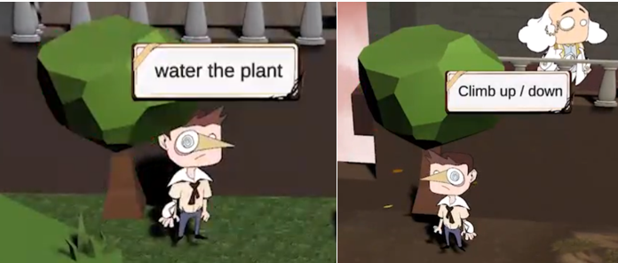
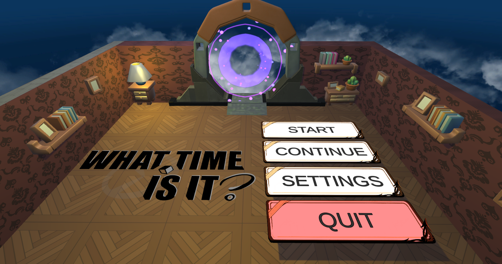

A 4D game where time is a factor in the gameplay. The Player is tasked with correcting a glitch in the Universal Timeline that has become corrupted due to pollution and the effects of climate change. The game is set in the Player’s family home, who’s grandparents are the keeper of the time continuum. The Player must travel between the Past, Present and Future to solve various puzzles and collect the correct time crystals to fix the time continuum. The puzzles span multiple time zones and require the Player to travel backwards and forwards to solve them.
The development process followed Agile principles, specifically the SCRUM framework. Each sprint was dedicated to key milestones such as storyboarding, designing puzzles for multiple timelines, implementing the Time Machine functionality, and fine-tuning progression mechanics. Tools like JIRA facilitated task management and progress tracking, ensuring the team remained aligned throughout the project.

As a gameplay programmer and producer, my contributions were pivotal in bridging communication gaps between departments, introducing tools to streamline workflows, and maintaining alignment within the team. Working within an eight-member team comprising three animators, three designers, and two programmers, I ensured that both production and technical facets were closely aligned. As a producer, I introduced collaborative tools such as Miro, JIRA and Arcweave to streamline workflows, resolve communication gaps, and maintain cross-departmental alignment, while also mentoring freshers and mediating between varying skill levels. Programmatically, I developed core systems including the Tree Growing Mechanic to facilitate timeline-dependent tree growth, the Time Machine System for seamless timeline transitions complete with VFX and UI integration, and an Audio Manager to create dynamic soundscapes. I also designed the Main Menu and Settings panels with accessibility features, implemented interactive elements such as doors, puzzles and NPCs, and worked closely with the team on UI and VFX refinement.

This project provided a rich learning experience that deepened my understanding of game development and collaborative problem-solving. I learned how to effectively merge creative storytelling with rigorous technical implementation, which involved mastering agile development practices and iterative design techniques. The challenges posed by the unique time travel puzzles enhanced my critical thinking and troubleshooting skills, while the collaborative environment developed my communication and project management abilities. Overall, the process not only broadened my technical expertise, but also taught me valuable lessons about teamwork, adaptability, and the importance of aligning design vision with practical execution.